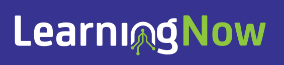

Draft
Curriculum Planner
A desktop application to guide you from the Australian Curriculum to teaching and learning programs.
Learn More →
Educational Tools & Resources
A collection of educational tools and experiments
A desktop application to guide you from the Australian Curriculum to teaching and learning programs.
Learn More →A simple website that contains a bank of brainbreaks. Taken from a FOSS recipe website.
Visit Project →Smart seating arrangement tool for classrooms
Visit Project →Visual classroom timer for better time management
Visit Project →A full stack brain break app. A learning project with more features than needed. Too complex for the problem it solves. Will be deprecated.
Visit Project →Learning Now is a collection of educational tools and experiments. Each project explores different ways technology can support learning and teaching.
The mission of Learning Now is to improve the quality of learning through multiple approaches, primarily through software.